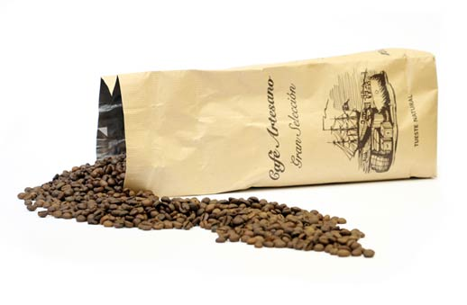
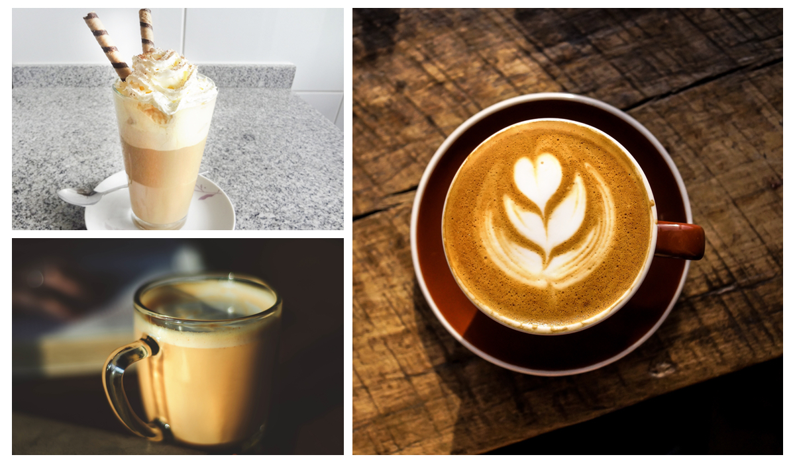

Descubre nuestra tienda
Caf tostado a mano y recién molido
¿Eres un verdadero amante del café? ¿Quieres descubrir sabores originales, basados en las mejores materias primas? En Cafés Mañana disponemos de los más diversos formatos (café en grano, café molido, cápsulas), todos ellos basados en granos arábicas ácidos y aromáticos de Centro América y Brasil, así como robustas de la más alta calidad, para crear mezclas armoniosas. Seguimos tostando el café a mano y moliéndolo justo antes de empaquetarlo, por eso te garantizamos el mejor producto.
¿Eres distribuidor?
Estás de suerte
Somos una referencia en cafés para hostelería en la Comunidad Valenciana, ya que disponemos de una gran variedad en todos los formatos y te asesoramos de forma personalizada para que encuentres el mejor producto para tus clientes.
Hay mil formas de preparar un buen café.
Y muchas recetas con café
Si te interesa sacar mucho más partido al café, en esta sección podrás encontrar originales recetas para complementar tu café de sobremesa, así como platos en los que el café de gran calidad añade un toque de modernidad y sofisticación,¡no te las pierdas!
